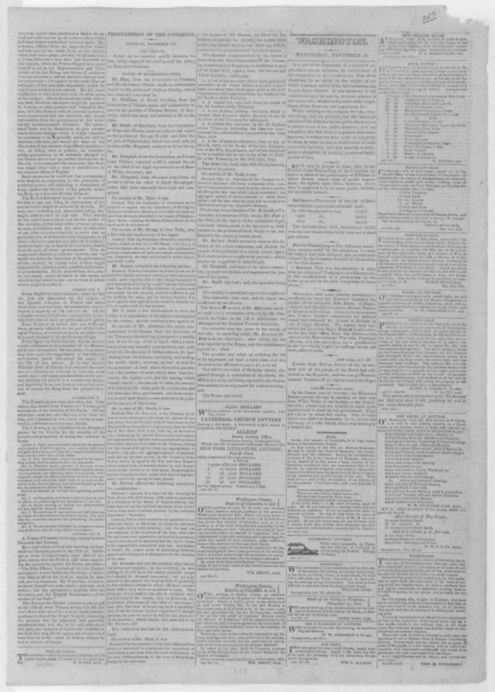
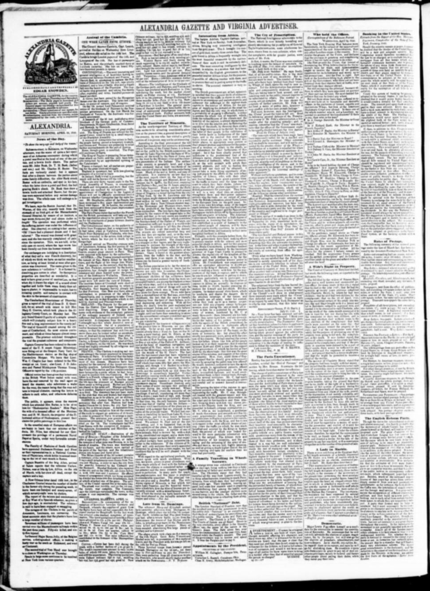
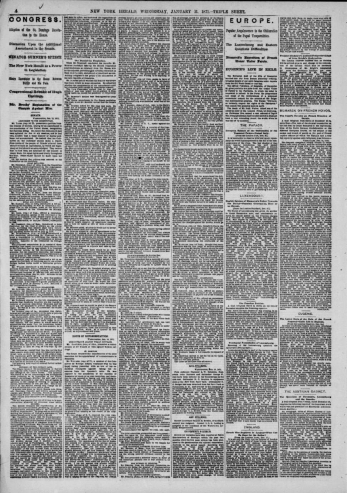
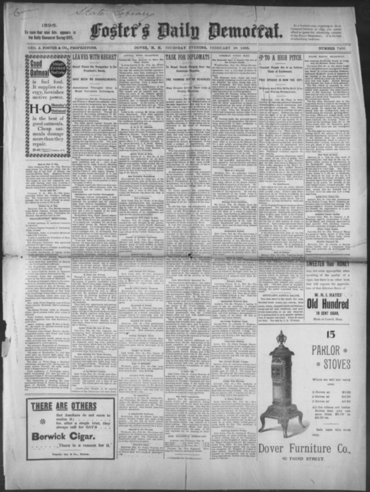
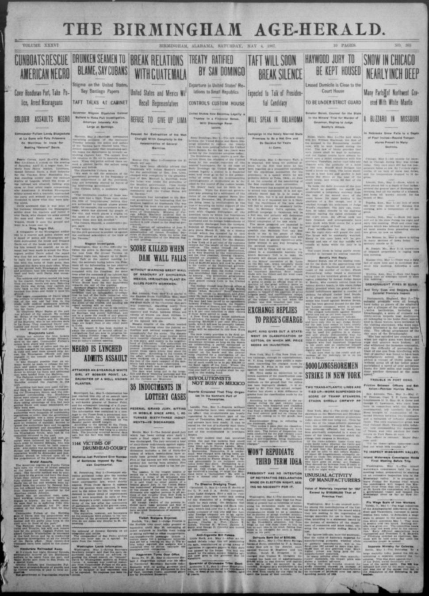
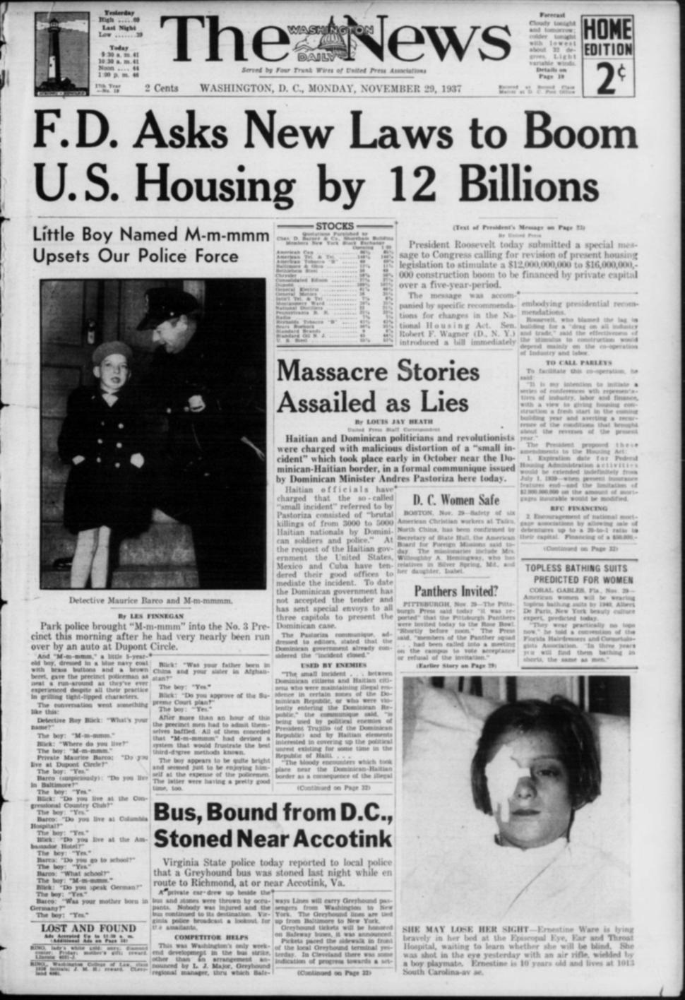

ErasEras
The eras that organize this collection, each one told from its own articles.Las eras que organizan esta colección, cada una contada desde sus propios artículos.
1804–1822
A Revolution Next DoorUna revolución al lado
American editors discovered Hispaniola through Haiti's revolution: fascination, fear, and trade. The island's east lived the same years as collapsing empires and an approaching army.
Los editores estadounidenses descubrieron La Española a través de la revolución de Haití: fascinación, miedo y comercio. El este de la isla vivió esos mismos años como imperios que caían y un ejército que se acercaba.

In the former part of October, the Delaware Indians passed through
1822–1844
Invasion, Occupation, and IndependenceInvasión, ocupación e independencia
American papers reported 1822 in the calm words of administration. Dominicans lived the next twenty-two years as a foreign occupation, and ended it with independence in 1844.
Los periódicos estadounidenses contaron 1822 con las palabras tranquilas de la administración. Los dominicanos vivieron los veintidós años siguientes como una ocupación extranjera, y la terminaron con la independencia en 1844.
1844–1861
A Republic Looking for RecognitionUna república en busca de reconocimiento
American coverage mixed sympathy for the new republic with measurements of Samaná Bay as a future naval station. Dominicans were defending borders and asking to be treated as a country.
La cobertura estadounidense mezcló simpatía por la nueva república con mediciones de la bahía de Samaná como futura estación naval. Los dominicanos defendían fronteras y pedían ser tratados como un país.
Late from St. Domingo.Noticias recientes de Santo Domingo.

Late from St. Domingo.
1861–1865
Annexation to Spain and the Restoration WarLa anexión a España y la Guerra de la Restauración
American readers followed Spain's return through the lens of their own Civil War. Dominicans answered the annexation with a war that restored the republic.
Los lectores estadounidenses siguieron el regreso de España con el lente de su propia Guerra Civil. Los dominicanos respondieron a la anexión con una guerra que restauró la república.
Following the closing lines of a proclamation dated Santo Domingo
1865–1874
The American Annexation FightLa lucha por la anexión estadounidense
In Washington, annexation was debated as an American question of destiny, race, and naval strategy. In Santo Domingo, it was debated as the sale of the nation — and refused.
En Washington, la anexión se debatió como una cuestión estadounidense de destino, raza y estrategia naval. En Santo Domingo, se debatió como la venta de la nación — y fue rechazada.
The Dominican ResolutionLa resolución dominicana

The report covers the debate in both chambers on the joint
1874–1899
Sugar, Debt, and StrongmenAzúcar, deuda y caudillos
American coverage moved to the business pages: sugar, steamships, and bonds. On the ground, the sugar boom and Heureaux's dictatorship were remaking Dominican society.
La cobertura estadounidense pasó a las páginas de negocios: azúcar, vapores y bonos. En el terreno, el auge azucarero y la dictadura de Heureaux estaban rehaciendo la sociedad dominicana.

In 1892 Westendorph Co. transferred all of their rights to an American company
1899–1905
Collapse and the Customs QuestionColapso y la cuestión de las aduanas
After 1899, American papers narrated collapse and prescribed supervision. Dominicans saw the harvest of the debt — and decisions about their country moving abroad.
Después de 1899, los periódicos estadounidenses narraron un colapso y recetaron supervisión. Los dominicanos vieron la cosecha de la deuda — y cómo las decisiones sobre su país se mudaban al extranjero.
1905–1916
The Customs ReceivershipLa receptoría de aduanas
American papers praised the receivership as a tidy Caribbean solution. A generation of Dominicans learned from it that sovereignty could be signed away one revenue at a time.
Los periódicos estadounidenses elogiaron la receptoría como una solución caribeña ordenada. Una generación de dominicanos aprendió de ella que la soberanía podía entregarse un ingreso a la vez.
Treaty Ratified by San DomingoTratado ratificado por Santo Domingo

Treaty Ratified by San Domingo
1916–1924
The American OccupationLa ocupación estadounidense
American coverage measured the occupation in roads, revenue, and quiet, and filed resistance as banditry. Dominicans lived eight years of foreign military rule.
La cobertura estadounidense midió la ocupación en carreteras, ingresos y tranquilidad, y archivó la resistencia como bandolerismo. Los dominicanos vivieron ocho años de mando militar extranjero.
1924–1961
Trujillo EraEra de Trujillo
For decades, much of the American press weighed Trujillo's order and anti-communism against his terror, and often took the bargain. Dominicans lived the terror directly.
Durante décadas, gran parte de la prensa estadounidense pesó el orden y el anticomunismo de Trujillo contra su terror, y a menudo aceptó el trato. Los dominicanos vivieron el terror directamente.
Massacre Stories Assailed as LiesHistorias de masacre atacadas como mentiras

Massacre Stories Assailed as Lies
1961–1963
Post-TrujilloPost-Trujillo
American papers covered 1961 as a Cold War crisis: another Cuba? Dominicans lived it as release — and voted, freely, for Juan Bosch.
Los periódicos estadounidenses cubrieron 1961 como una crisis de la Guerra Fría: ¿otra Cuba? Los dominicanos lo vivieron como una liberación — y votaron, libremente, por Juan Bosch.
1963–1965
The TriumvirateEl Triunvirato
The coup that overthrew Bosch drew brief, accepting coverage in the United States. For Dominicans, the Triunvirato was the old machinery without Trujillo — and the road to April 1965.
El golpe que derrocó a Bosch recibió una cobertura breve y complaciente en Estados Unidos. Para los dominicanos, el Triunvirato fue la vieja maquinaria sin Trujillo — y el camino hacia abril de 1965.
1965–1966
The April War and the Second InterventionLa Guerra de Abril
These years stand on the timeline between the Triumvirate and the Democratic Opening.Estos años quedan en la cronología entre el Triunvirato y la apertura democrática.
1966–1978
Balaguer's Twelve YearsLos Doce Años de Balaguer
These years stand on the timeline between the Triumvirate and the Democratic Opening.Estos años quedan en la cronología entre el Triunvirato y la apertura democrática.
1978–1984
The Democratic OpeningLa apertura democrática
American papers greeted 1978 as a democratic success, then filed the country under economics. Dominicans got free politics back — and, in April 1984, rose against the price of austerity.
Los periódicos estadounidenses saludaron 1978 como un éxito democrático, y luego archivaron el país bajo economía. Los dominicanos recuperaron la política libre — y, en abril de 1984, se levantaron contra el precio de la austeridad.